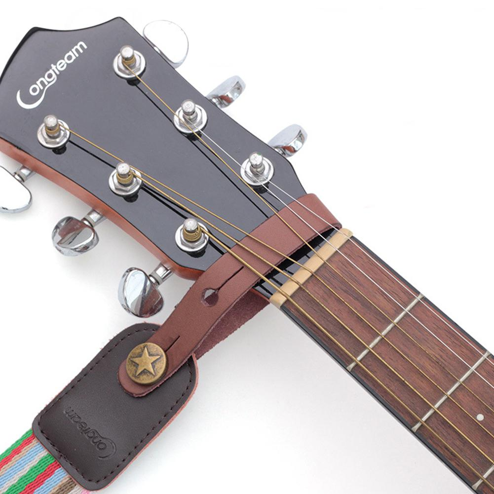

Head
The headstock is located at the end of the guitar neck farthest from the body. It is fitted with machine heads that adjust the tension of the strings, which in turn affects the pitch. The traditional tuner layout is "3+3", in which each side of the headstock has three tuners (such as on Gibson Les Pauls). In this layout, the headstocks are commonly symmetrical. Many guitars feature other layouts, including six-in-line tuners (featured on Fender Stratocasters) or even "4+2" (e.g. Ernie Ball Music Man). Some guitars (such as Steinbergers) do not have headstocks at all, in which case the tuning machines are located elsewhere, either on the body or the bridge.
The nut is a small strip of bone, plastic, brass, corian, graphite, stainless steel, or other medium-hard material, at the joint where the headstock meets the fretboard. Its grooves guide the strings onto the fretboard, giving consistent lateral string placement. It is one of the endpoints of the strings' vibrating length. It must be accurately cut, or it can contribute to tuning problems due to string slippage or string buzz. To reduce string friction in the nut, which can adversely affect tuning stability, some guitarists fit a roller nut. Some instruments use a zero fret just in front of the nut. In this case the nut is used only for lateral alignment of the strings, the string height and length being dictated by the zero fret.
Neck
A guitar's frets, fretboard, tuners, headstock, and truss rod, all attached to a long wooden extension, collectively constitute its neck. The wood used to make the fretboard usually differs from the wood in the rest of the neck. The bending stress on the neck is considerable, particularly when heavier gauge strings are used (see Tuning), and the ability of the neck to resist bending (see Truss rod) is important to the guitar's ability to hold a constant pitch during tuning or when strings are fretted. The rigidity of the neck with respect to the body of the guitar is one determinant of a good instrument versus a poor-quality one.
Frets
Almost all guitars have frets, which are metal strips (usually nickel alloy or stainless steel) embedded along the fretboard and located at exact points that divide the scale length in accordance with a specific mathematical formula. The exceptions include fretless bass guitars and very rare fretless guitars. Pressing a string against a fret determines the strings' vibrating length and therefore its resultant pitch. The pitch of each consecutive fret is defined at a half-step interval on the chromatic scale. Standard classical guitars have 19 frets and electric guitars between 21 and 24 frets, although guitars have been made with as many as 27 frets. Frets are laid out to accomplish an equal tempered division of the octave. Each set of twelve frets represents an octave. The twelfth fret divides the scale length exactly into two halves, and the 24th fret position divides one of those halves in half again.